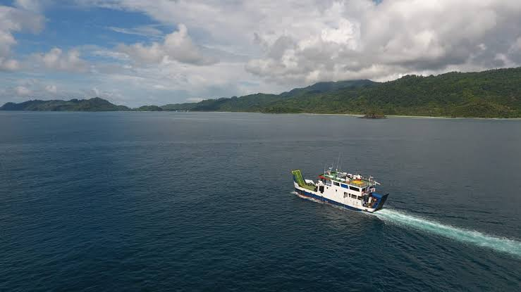

Transportasi &
Perjalanan
ℹ️ Informasi Penting
- ✔️ Tiket dapat dibeli di loket pelabuhan
- ✔️ Datang lebih awal 30 menit sebelum keberangkatan
- ✔️ Pastikan kondisi cuaca sebelum perjalanan
- ✔️ Jaga kebersihan dan buang sampah pada tempatnya
🛳️ KMP Papuyu (ASDP)
Layanan kapal feri resmi ASDP lintas rute berkala Pulau Aceh.
📋 Penjelasan Sekilas Operasional:
Jadwal KMP Papuyu dirilis oleh pihak ASDP secara berkala setiap bulan/minggu. Kapal ini melayani dua lintasan berbeda secara bergantian dengan basis keberangkatan pagi hari dari Ulee Lheue. Karena kondisi cuaca laut yang dinamis, jadwal harian bersifat fleksibel and wajib dipantau ulang melalui kanal informasi resmi.
| Rute Lintasan | Frekuensi Jadwal | Waktu Berangkat | Estimasi Tarif |
|---|---|---|---|
| ⚓ Ulee Lheue → Lamteng (Pulo Nasi) | Hampir Setiap Hari 4-5x / Minggu |
Pagi (08.30) | Rp 19.800 |
| ⚓ Lamteng (Pulo Nasi) → Ulee Lheue | Hampir Setiap Hari 4-5x / Minggu |
Siang (12.00) | Rp 19.800 |
| ⚓ Ulee Lheue → Serapung (Pulo Breueh) | Rutin Berkala 1x / Minggu (Kamis) |
Pagi (07.30) | Rp 19.800 |
| ⚓ Serapung (Pulo Breueh) → Ulee Lheue | Rutin Berkala 1x / Minggu (Kamis) |
Siang (10.03) | Rp 19.800 |
⚠️ Data Di Atas Berdasarkan Arsip Februari
Disarankan melakukan kroscek balik rilis kalender terbaru.
⛵ Boat / Kapal Kayu (Rakyat Pulo Nasi)
Layanan transportasi harian antar-pulau berbasis armada swadaya masyarakat Pulo Nasi.
🔄 Sistem Giliran Operasional (Rotasi):
Jadwal keberangkatan dilayani oleh 3 armada boat kampung yang berputar secara bergantian setiap harinya demi asas keadilan rute:
📍 Lokasi Tambatan Port (Dermaga):
• Port Kampung Deudap: Melayani sandar untuk Boat Deudap dan Boat Penaso.
• Port Kampung Lamteng: Melayani sandar untuk Boat Lamteng (terletak di samping Pelabuhan Feri ASDP).
| Rute Perjalanan (PP) | Jam Berangkat | Tarif Penumpang | Tarif Kendaraan | Keterangan |
|---|---|---|---|---|
| 🌅 Pulo Nasi → Ulee Lheue (Banda Aceh) | 08.00 WIB | Rp 25.000 / orang | Rp 25.000 / motor | Berangkat Pagi |
| 🏙️ Ulee Lheue (Banda Aceh) → Pulo Nasi | 14.00 WIB | Rp 25.000 / orang | Rp 25.000 / motor | Armada yang sama kembali ke pulau |
⛵ Kapal Nelayan / Kapal Harian (Pulo Breueh)
Layanan armada transportasi harian penghubung daratan Banda Aceh dengan Pulo Breueh.
🛳️ Informasi Armada Kapal:
• Nama Kapal Harian: KM Satria Baru, KM Jasa Bunda, KM Satria Muda.
• Kapal Cepat Tambahan: KM Peunaso (Peunaso Express).
📍 Pelabuhan Asal & Tujuan:
• Pelabuhan Asal: Pelabuhan Nelayan Lampulo (Banda Aceh).
• Titik Dermaga Tujuan: Desa Gugop, Lampuyang, dan Meulingge (Pulo Breueh).
| Rute Lintasan | Hari Operasional | Jam Berangkat | Estimasi Tarif | Waktu Tempuh |
|---|---|---|---|---|
| 🌅 Gugop / Dermaga Pulau → Lampulo (Banda Aceh) | Setiap Hari (Kecuali Jumat) | 08.00 WIB |
Rp 15.000 - Rp 20.000 / orang + Rp 15.000 - Rp 20.000 / motor |
± 2 - 2,5 Jam |
| 🏙️ Pelabuhan Lampulo → Gugop / Lampuyang / Meulingge | Setiap Hari (Kecuali Jumat) | 14.00 WIB |
Rp 15.000 - Rp 20.000 / orang + Rp 15.000 - Rp 20.000 / motor |
± 2 - 2,5 Jam |
⚠️ Perhatian !
Utamakan keselamatan selama perjalanan. Patuhi arahan petugas setempat dan pastikan selalu menggunakan pelampung keselamatan saat berada di dalam lambung kapal rakyat.